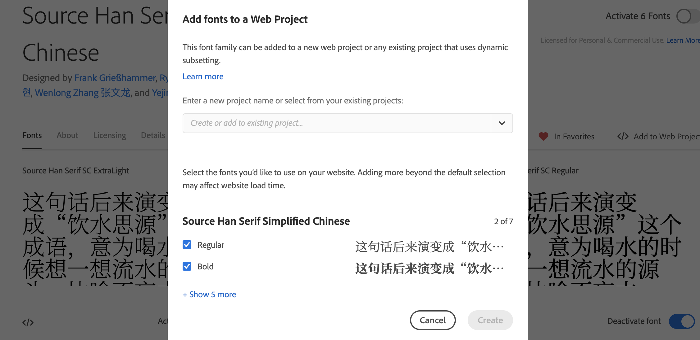
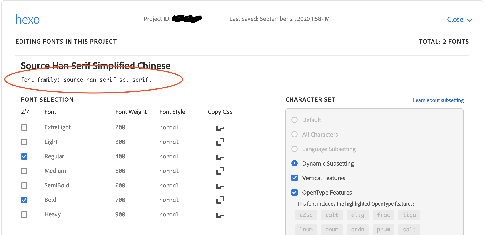

使用 Adobe Typekit 给博客换思源系列字体
给个人博客换思源字体遇到很多坑，在这里记录一下。
因为 Google Fonts 没有收录思源系列字体，所以在这里使用 Adobe Typekit 作为在线字体库。
注册 Adobe 账号
首先去https://fonts.adobe.com/注册 Adobe 账号，注意要挂梯子，并且所在地区不能选择中国，否则会不能登录，提示网络异常，但是你选择其他任意地区就算挂着不同地区的梯子都不会提示你网络异常。所以这里又是国内用户被特殊对待了，毕竟众所周知中国不在地球上，每次全球同步的东西中国总会被玩出不同的花样。（可恶！）
搜索思源宋体（Source Han Serif Simplified Chinese）
这里以思源宋体为例，首先在 Typekit 首页的搜索框输入 Source Han Serif Simplified Chinese 并回车搜索，会弹出搜索结果：
创建个人字体库
点击进入字体详情，勾选 Source Han Serif SC Regular 即常规字重（包含了加粗字重），然后点击右上角的 </> Add to Web Project 按钮：
弹出 Web Project 模态框：

点开下拉框并选择 Create a new project，命名为 hexo，然后点击右下角 Create/Save 完成创建个人网络字体库。
然后点按 My Adobe Fonts 按钮：
再选择 Web Projects 选项卡：
就可以看到我们创建的 hexo 字体库了。
引入字体载入代码
复制其中的代码，类似：
<script> |
放到自己博客源码的 header.ejs 文件里面任意位置就完成了。
修改博客字体配置
字体名称需要回到刚才的 Web Projects 页面，在 hexo 项目中点击右上角的 Edit Project < 按钮：
复制其中的 font-family: source-han-serif-sc, serif;，即 css 的字体名称：

然后修改博客的字体配置就完了。
各个博客主题修改字体的方式略有不同，如果是使用的cactus，那就在 themes/cactus/source/css/_variables.styl 文件内找到字体设置。
本文是maozhijie的原创文章，转载请提前告知作者并且标明出处。
内容遵循 署名-非商业性使用-相同方式共享 4.0 国际 CC BY-NC-SA 4.0 协议。